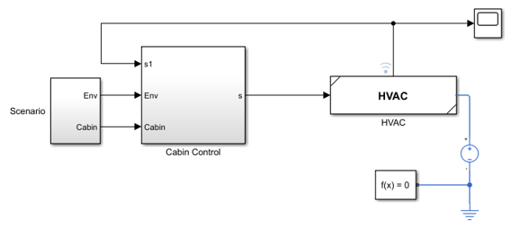
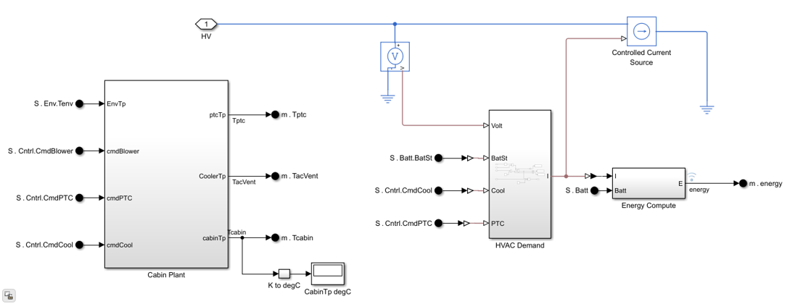

Estimate Range with HVAC Loads
Vehicle workflow — Compares energy use across ambient and cabin conditions.
Cabin climate and auxiliary thermal-load model
Component path: Components / HVAC

Heating, ventilation, and air conditioning component for the BEV system model. The HVAC subsystem manages cabin comfort by controlling blower airflow, PTC heating, and compressor-based cooling. It draws power from the HV bus and has a significant impact on vehicle range, especially under extreme ambient conditions. Two fidelity levels are available.
Use HVACsimpleTh when cabin temperature is a state that must respond to ambient conditions, occupants, heating, and cooling. Use HVACEmpiricalRef for faster energy-demand studies driven by calibrated performance maps rather than physical cabin and refrigerant dynamics.
| Model | Description | Use case | Templates | Documentation & files |
|---|---|---|---|---|
| HVACEmpiricalRef | Lookup-table-driven cabin and refrigeration performance. | Fast cabin-comfort and HVAC energy-demand studies where refrigerant loop dynamics are not needed. | VehicleElecAux, VehicleElectroThermal | Documentation · Parameters |
| HVACsimpleTh | Cabin air volume, heat transfer, blower, cooler, and PTC heater. | System-level range estimation studies where cabin temperature response and HVAC energy consumption matter. | VehicleElecAux, VehicleElectroThermal | Documentation · Parameters |
Workflow/Vehicle/RangeEstimation/) — HVAC power consumption is a major factor in range under cold (heating) and hot (cooling) ambient conditions. The AC on/off flag directly toggles HVAC load in the simulation.
Vehicle workflow — Compares energy use across ambient and cabin conditions.
Both fidelities share the same control-signal boundary so variants can be exchanged in place. Outputs differ in whether cabin temperature comes from thermal dynamics or empirical curves.
| Port / signal | Direction | Description |
|---|---|---|
| Environment temperature | Input | Ambient air temperature. |
| Blower command | Input | Blower speed or enable signal. |
| PTC command | Input | Cabin heater power command. |
| Compressor command | Input | AC compressor enable. |
| Cabin Temperature | Output | Simulated cabin air temperature. |
| HVAC Energy | Output | Cumulative HVAC energy consumption. |
| Blower/Cooler/PTC States | Output | Operating states of HVAC actuators. |
Verify cabin temperature response and HVAC energy consumption under controlled ambient conditions.
Run the maintained HVAC test case before integration.
Chiller | Battery Heater | Vehicle Controller